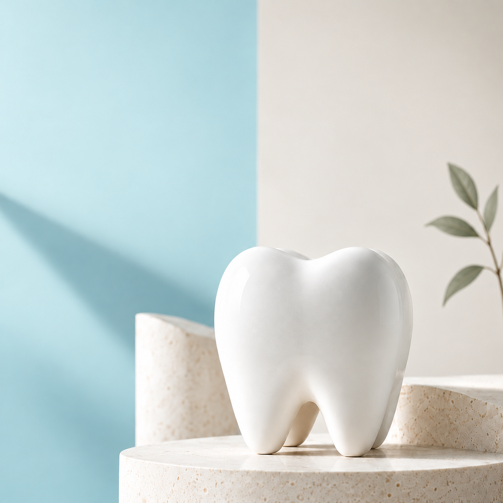
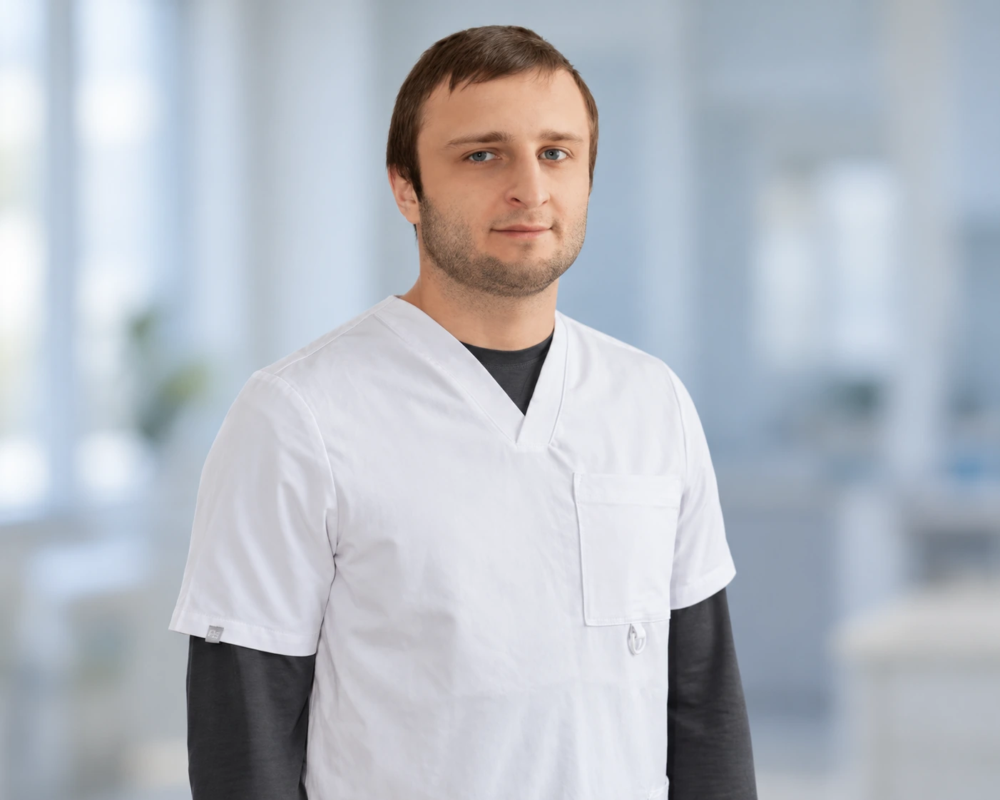

Наш опыт
10+ летОпыт в протезировании и восстановлении зубов
Лечение зубов, профессиональная гигиена,
протезирование и имплантация.

Опыт в протезировании и восстановлении зубов
Здесь важно не просто вылечить зубы, а понять пациента, объяснить возможности и вместе выбрать подходящее решение.

Лечение зубов · Эндодонтия · Протезирование
Внимательно выслушивает, подробно объясняет варианты лечения и помогает принять решение без спешки. На приёме важно не только качество лечения, но и спокойствие пациента.
Что беспокоит, пожелания и прошлый опыт лечения.
Учитываем здоровье, при необходимости — диагностика.
Варианты, этапы и стоимость — простым языком.
План, который подходит именно вам.
Для взрослых — лечение и профилактика, для старшего поколения — сохранение зубов и восстановление жевательной функции. Детский приём, специалиста и допустимый возраст уточните у администратора.
Записаться на консультациюЛечение, протезирование, имплантация и профессиональная гигиена. Выберите направление и посмотрите стоимость основных услуг.
Сохраняем свои зубы как можно дольше. Лечим кариес, его осложнения и восстанавливаем повреждённые зубы.
Восстанавливаем жевательную функцию и эстетику улыбки. Ведёт Тимур Гаджиев, опыт более 10 лет.
Возвращаем утраченные зубы. Обследования и этапы восстановления обсуждаем на консультации.
Удаляем налёт и отложения, проводим профессиональную чистку. Даём рекомендации по домашнему уходу.
Стоимость гигиены уточните у администратора при записи.
Точная стоимость определяется после осмотра — план, этапы и цену обсуждаем заранее.
Приведите друга или близкого человека — получите скидку 10%
на профессиональную гигиену.
Условия участия, состав процедуры и срок действия предложения уточняйте у администратора до записи. Позвонить в клинику
на профессиональную
гигиену
Фотографии из галереи клиники в 2ГИС. Нажмите на снимок, чтобы рассмотреть результат.
Огромная благодарность Тимуру, замечательный доктор. Лечение прошло безболезненно и быстро, советую!Екатерина Киселева28 мая 2025 · Яндекс Карты
Отличная стоматология! Врач всегда приветлив, выслушает и подскажет, что и в каком порядке лечить. В кабинете и на ресепшене чисто.Кирилл Антонов27 июля 2024 · Яндекс Карты
Очень чуткий и аккуратный стоматолог, человеческое отношение и профессионализм. Теперь планирую лечить зубы только здесь.Денис Д.22 октября 2023 · Яндекс Карты
Позвоните по номеру +7 (922) 444-77-39 или напишите в WhatsApp. Администратор уточнит задачу и подберёт удобное время.
Да, консультация врача бесплатная. Её состав, необходимость дополнительных снимков и стоимость диагностики уточните при записи.
После осмотра врач объяснит варианты и обсудит план лечения. Стоимость зависит от состояния зубов, объёма работы и выбранного решения.
Наличные, банковская карта и перевод. Детали оплаты уточните у администратора.
Рядом с клиникой есть парковка. Вход — со стороны улицы Губкина. Адрес: Сургут, ул. Губкина, 18.
Гарантийные условия зависят от вида лечения и используемых конструкций. Врач расскажет о них до начала лечения.
Беспокоит зуб, нужна коронка или давно откладываете лечение?
Расскажите об этом врачу и задайте свои вопросы.
Сургут, ул. Губкина, 18 · вход со стороны улицы, рядом парковка